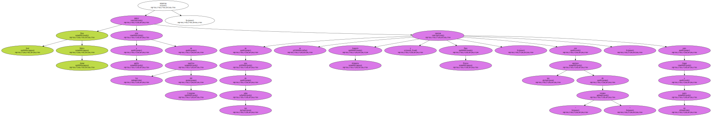
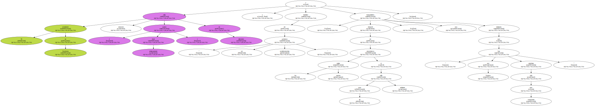
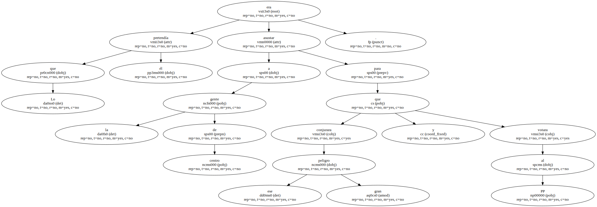
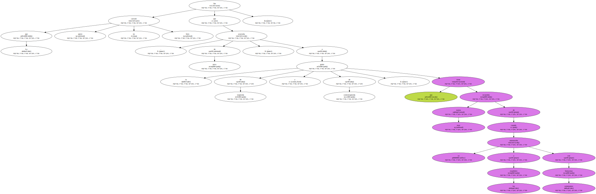
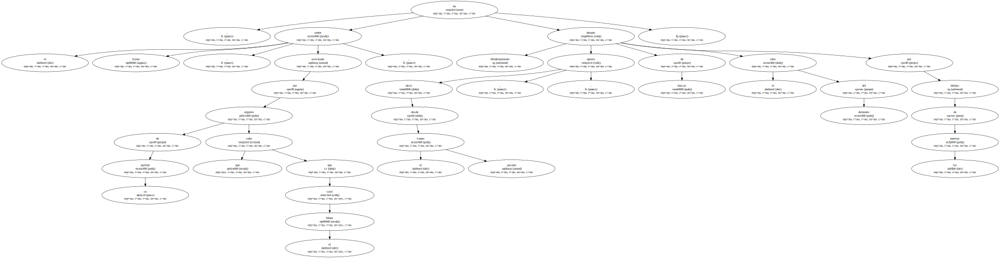
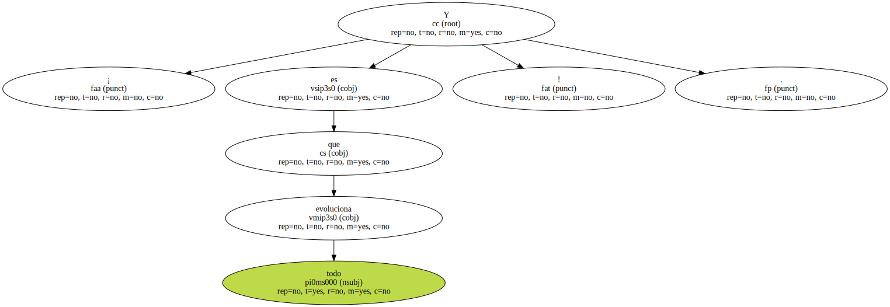

Antiguamente , quiero decir , hace tres días , los jefes de gobierno de derechas asustaban a la gente gritando : " ¡ Qué vienen los comunistas ! ".

Don José María Aznar debió oler a azufre en los pasillos del Congreso mientras en una de sus salas se reunían Joaquín Almunia y Paco Frutos , con sus equipos de " rojazos " , para llegar a un pacto.
El presidente en funciones salía entonces ( antiguamente quiero decir ) en televisión y hablaba de " un gobierno socialcomunista " y , después de anunciarnos los peores males si tal cosa salía adelante , nos tranquilizaba diciendo que " por fortuna hay más centristas que comunistas ".
Lo que él pretendía era asustar a la gente de centro para que conjurara ese gran peligro y votara al PP.
Lo que quizá no calculó bien fue que , de paso , asustaba a la gente de izquierda y de centroizquierda , que tiene muy malos recuerdos de cuando se amenazaba a los españoles con semejantes fantasmas.
Modernamente , quiero decir , desde el pasado Lunes , el señor Aznar , asesorado por alguien de su partido que sabe que cayó el Muro , ha dejado de buscar el rabo del demonio por debajo de las puertas.
¡ Y es que todo evoluciona !.
